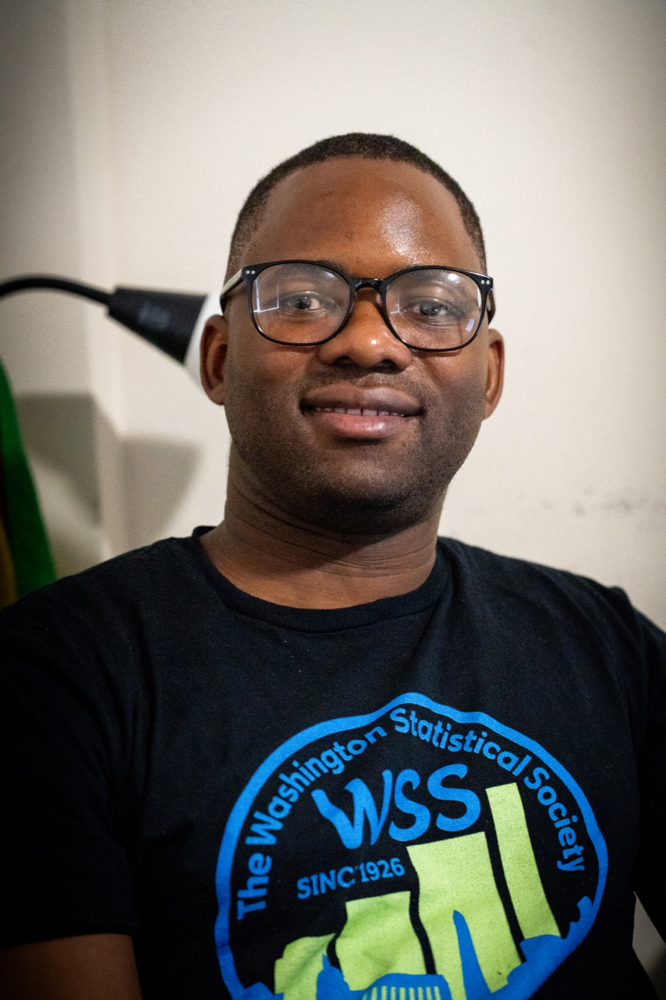

Applied AI
Snowflake Cortex Analyst · AI agents · Python · scikit-learn
LIBERTY MUDZINGWA · DATA & AI
I bring an actuarial mind to data engineering, business intelligence and applied AI, turning complex information into decisions that matter.
Let’s connect libyxmudzingwa@gmail.com ↗◎ Gaithersburg, Maryland · Washington, DC area

01 / THE THROUGHLINE
I'm Liberty, a Business Intelligence Analyst and AI practitioner with more than six years of experience spanning financial services, pharmaceuticals, education and development finance.
Today, at PenFed, I steward Credit Cards and Deposits data and build AI agents with Snowflake Cortex Analyst. My work connects the foundations of quality, governance and engineering to tools people can actually use.
My journey has taken me from actuarial science in South Africa to data science and AI in Washington, DC. Across every role, the question stays the same: how can we make this data useful?
EXPLORE & CONNECT
Explore my GitHub profile and public work.
github.com/libertymdz02 / CONNECTFollow my professional journey and connect.
Liberty Mudzingwa03 / EXPERIENCEReview my experience, education and technical skills.
View & print résumé02 / MY TOOLKIT
Snowflake Cortex Analyst · AI agents · Python · scikit-learn
SQL · Snowflake · REST APIs · PostgreSQL · ETL
Tableau · Sigma · Power BI · KPI design
Ataccama · Data stewardship · Quality monitoring
Actuarial science · Credit risk · Forecasting
C# · VB.NET · R · SAS · Git
03 / THE JOURNEY
Primary Data Steward for Credit Cards and Deposits. Building conversational AI agents with Snowflake Cortex Analyst and turning governed data into executive insights.
Connected warehouse, Salesforce and SharePoint data to deliver performance reporting and useful business metrics.
Built REST APIs and C# / VB.NET applications for pharmaceutical manufacturing. Developed APIs for 60% of data grabber applications.
Built a credit risk dashboard with 10+ executive metrics and forecast investment returns across industries and regions.
Valued debt portfolios, modelled expected returns in SQL and trained interns to improve productivity.
Supported group life and disability pricing, reserving and contract valuations.
04 / ALWAYS LEARNING
Bay Atlantic University
American University
University of Pretoria
ASSA exams passed: CB1 Business Finance · CS1 Probability and Mathematical Statistics
LET’S BUILD SOMETHING USEFUL